Trucs bàsics
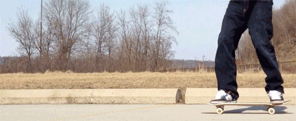
Tic-tac
Aquest truc consisteix en fer petits kickturns endevant i endarrere.
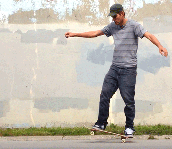
Manual
Per fer un manual, cal recolzar el pes en el peu del darrere de manera que el nose de la taula es mantingui a l'aire mentres avancem.
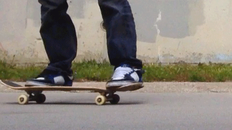
Fakie/Switch
Aquest terme fa referència a rodar cap enrere, amb el peu no dominant devant.
Fakie kickturn
Mentres rodes fent un fakie, fas un kickturn per tornar a posisionar-te normal.
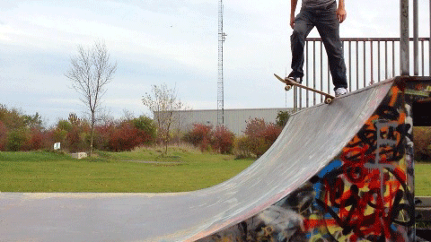
Drop In
Et prepares a dalt d'una rampa recolzant-te únicament al tail. Després, rapidament i amb força emputxes cap a baix les rodes delanteres i caus i et deixes rodar.
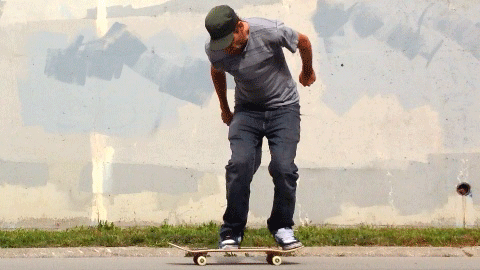
Ollie
Aquesta és la base per trucs més avançats. Saltes amb el peu de darrere fent saltar la taula, i amb el de davant la nivelles a l'aire per saltar junts.
Flip-tricks
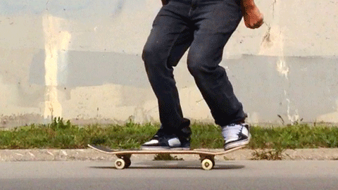
Pop shuvit
Per fer un pop shuvit, hem de fer girar la taula 180º mentres fem un ollie, amb l'ajuda d'una rotació per part del peu de darrere.
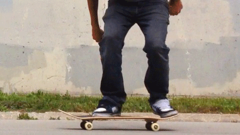
Kickflip
Aquest és un truc mitiquísim. Per fer-ho, cal fer un ollie; però a l'hora de nivellar la taula cal lliscar el peu dominant cap a un lateral per fer rotar la taula 360º en eix horitzontal.
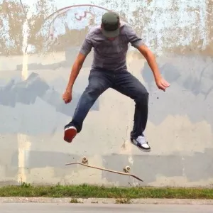
Heelflip
Aquest truc és similar al kickflip, però en comptes de fer rotar la taula amb la punta del peu, s'ha de fer amb el taló.
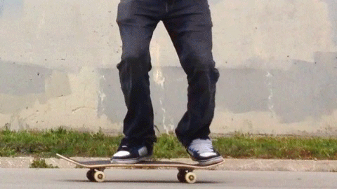
Backside Flip
Per fer-ho, simplement és fer un backside 180 ollie afegint un kickflip al procés. Simple.
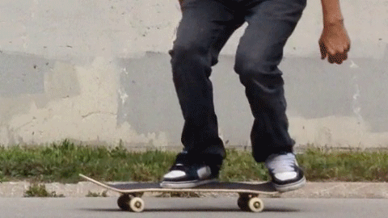
360 Flip
AKA 360 Kickflip/3 Flip. Popularment anomenat el millor truc de skate. Fem saltar la taula amb la part del tail, i amb el peu dominant el fem rotar un kickflip + 360 graus en eix vertical.
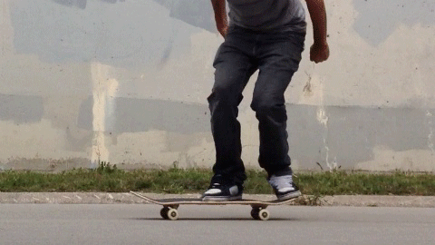
Hardflip
Fem saltar la taula per la part del nose, i ho convertim en un kickflip a l'aire amb elevació vertical. HARD.
Slides
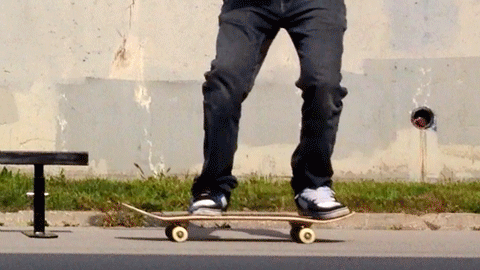
Boardslide
Aquest truc consisteix en grindejar amb la part central de la taula.
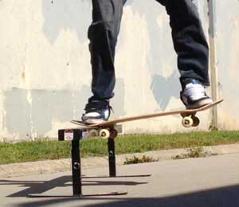
Noseslide
Aquest truc consisteix en grindejar amb la part devantera de la taula, el nose.
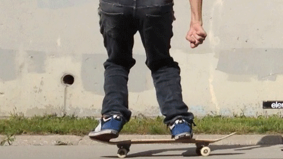
Tailslide
Aquest truc consisteix en grindejar amb la part posterior de la taula, la tail.